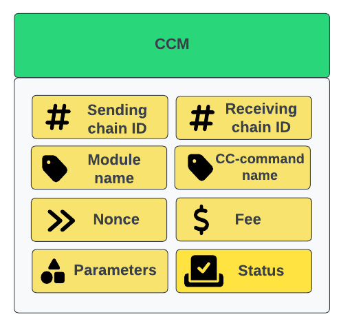
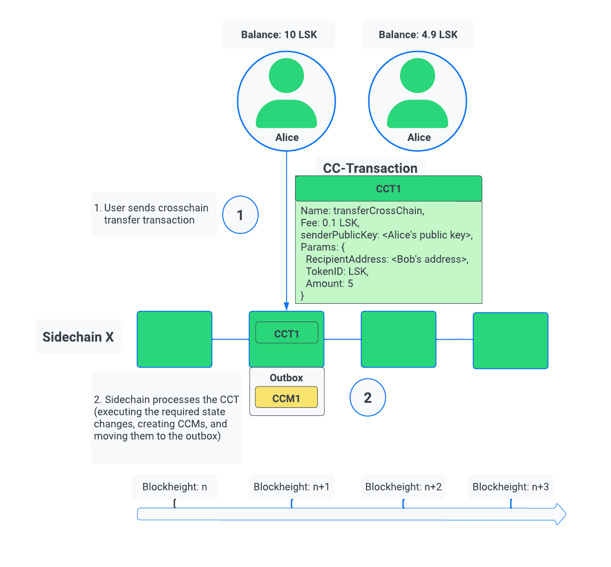
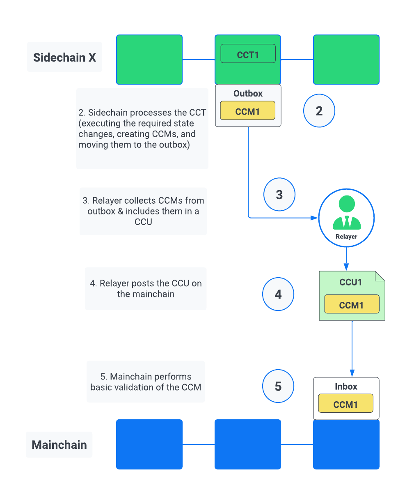
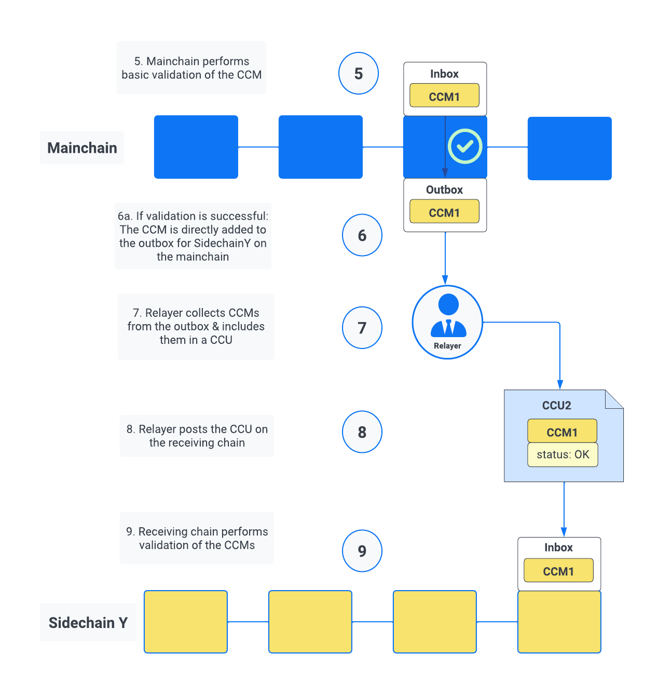
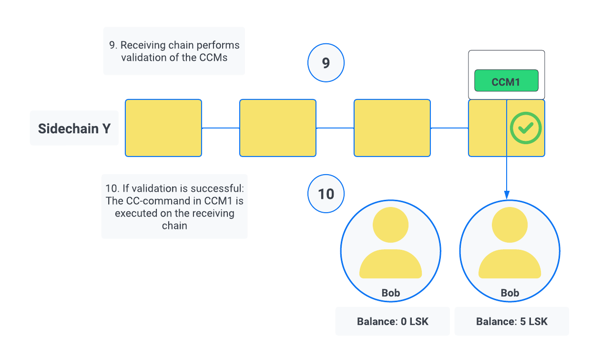
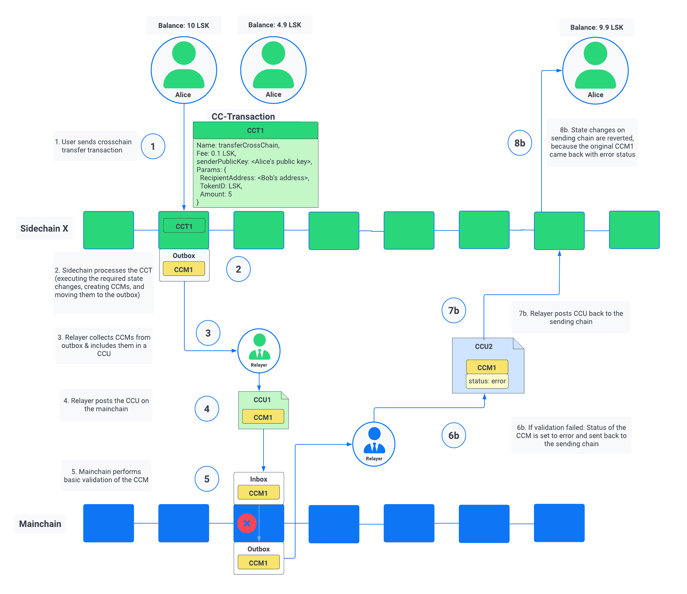
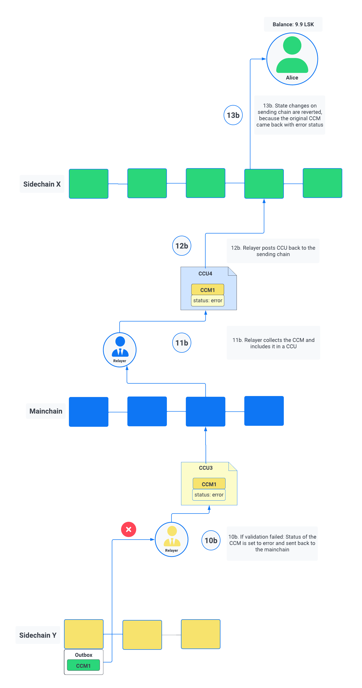

Cross-chain communication
On this page, we dive deeper into how cross-chain communication works in the Lisk ecosystem, by describing the different components and the general processes of how state changes are executed across chains in the Lisk ecosystem.
Specifically, you’ll learn about:
-
What are cross-chain messages (CCMs)?
-
What are cross-chain updates (CCUs)?
-
When a cross-chain transaction is submitted, what are the exact steps involved, to induce the corresponding state changes on the receiving chain?
-
What happens, if a CCM cannot be transmitted/executed successfully?
Inducing state changes across chains with CCMs
Cross-chain messages, or CCMs, are the central component of the cross-chain communication between sidechains, and between mainchain and sidechains.
Similar to a normal transaction, a CCM includes a reference to a command that triggers state mutations. However, in the case of a CCM, a cross-chain command is specifically used here, which triggers state changes on another chain, aka the receiving chain.
|
A Cross-chain message (CCM) is the envelope for a cross-chain command. Cross-chain commands, or CC-commands, induce a state transition in the receiving chain. |
A CCM includes the following properties:

- sending chain ID
-
Used to identify the chain sending the cross-chain message. The sending chain ID is used, for example, if the message triggers an error and has to be sent back.
- receiving chain ID
-
Used to identify the chain receiving the cross-chain message. On the mainchain, the receiving chain ID is read to route the message to the corresponding chain outbox.
- module & cross-chain command name
-
Once the message has reached the receiving chain, the two properties
moduleandcrossChainCommandspecify which logic should be used to validate and execute the message on the receiving chain. The module always corresponds to the module which includes the specified cross-chain command. - nonce
-
When a cross-chain message is created and added to the partner chain outbox, the nonce of the sending chain (total number of messages that were added to outboxes so far), is added to the message in the nonce property. This allows all messages to be uniquely identified by the (sendingChainID, receivingChainID, nonce, status) tuple, which implies that the message ID defined below will be unique for all messages in the ecosystem. The uniqueness of messages in the Lisk ecosystem is important for identifying messages with message IDs and tracking them throughout the ecosystem.
- fee
-
For all cross-chain messages, the message fee is used to account for the transaction processing in the receiving chain. This fee must be transferred from the sending chain account to the receiving chain account in order to maintain the correct balances on all chains in the ecosystem. The token ID for this fee is stored in the channel account and is by default the token ID of the LSK token. As it is stored in the channel account, it does not need to be repeated in the message. Being the main utility token of the Lisk ecosystem, the LSK token is always the token ID for this fee for the channels between the Lisk mainchain and registered sidechains.
- parameters
-
The
paramsproperty of the messages is defined by each module and can follow any schema, similar to theparamsproperty of a transaction. Theparamsproperty is not deserialized or validated by the Interoperability module. In the Lisk ecosystem, all cross-chain messages are routed through the mainchain. This means that messages should always have a sufficiently small size in order to be easily included in mainchain blocks. As the mainchain payload size limit is 15 KiB, and other properties in the cross-chain updates will not be larger than 4 KiB, the message size is limited to 10 KiB. To guarantee that all messages can be included and handled, blockchains in the Lisk ecosystem should have a payload size limit equal to or greater than 15 KiB (15 x 1024 bytes). - status
-
The basic error handling for routing messages to other chains is done by the mainchain. Information about the reason why the message failed is stored in the status property. For example, in the case the receiving chain does not exist, is not active or has been terminated, the mainchain will return the message to the sending chain. The sending chain can then revert the message and potentially refund users. To allow for future updates or improvements of the Interoperability module, other modules are restricted from using status codes up to 63 (included). Other modules may use other status codes larger or equal to 64.
1. Sending cross-chain transactions to generate CCMs
Let’s look at an example of a simple cross-chain transfer between Alice and Bob.

Alice has 10 LSK in her account on a chain called "Sidechain X". In this context, we refer to Sidechain X as the sending chain.
She wants to transfer 5 LSK to Bob, who has an account on another chain, "Sidechain Y", in this context the receiving chain.
Here is where cross-chain transactions (CCTs) come into play.
| A cross-chain transaction (CCT) is a transaction that, upon its execution, creates one or more cross-chain messages. |
A cross-chain transaction will perform the following:
-
execute the necessary changes on the sending chain (i.e. removing 5 LSK from Alice’s balance), and
-
also create CCMs to trigger the corresponding state changes in the receiving chain (i.e. add 5 LSK to Bob’s balance).
Therefore, to initiate the cross-chain token transfer, Alice sends a corresponding cross-chain transfer transaction on the sending chain X.
In the example, the CC-transfer will deduct 5 LSK from Alice’s balance once the transaction is included in a block. At the same time, it will create the corresponding cross-chain message, and add it to the outbox of the sending chain.
2. Relaying CCMs in a CCU
Several cross-chain messages are collected together and posted to another chain as part of the cross-chain update transaction, aka CCU.
A CCU contains the following properties:
- sending chain ID
-
Identifies the chain sending the cross-chain update. Only cross-chain update transactions coming from registered chains are valid, registered chains are the ones with an entry in the interoperability store corresponding to their
chainID. - active validators update
-
The chain account stores an array containing the BLS keys and BFT weights required to validate the certificate signature. This array has to be updated if the set of active validators changes in the chain sending the CCU. The difference between the stored array and the new one is included in this property.
- certificate
-
Authenticates the data sent in the CCU. It contains an aggregate signature of a set of the current validators of the sending chain. Anyone can obtain the full certificate from the blockchain by obtaining the corresponding block header, computing the unsigned certificate, and then obtaining the
aggregateCommitonce the block is finalized. - certificate threshold
-
The threshold of block generators in terms of BFT weight required to validate the certificate signature. This certificate threshold has to be updated if its value changes in the chain sending the certificate. In that case, the updated value is set in the
certificateThresholdproperty of the CCU. IfcertificateThresholdis set to0, it implies that the certificate threshold has not been changed in the sending chain. - inboxUpdate
-
The
inboxUpdatecontains the information relative to the messages to be included in the sending chain inbox. Cross-chain messages are stored in the chain outbox on the sending chain and in the corresponding inbox on the receiving chain. This property contains the following three elements:-
crossChainMessages: An array of cross-chain messages. ThecrossChainMessagesproperty must contain consecutive messages from the outbox. -
messageWitnessHashes: In the sending chain, all cross-chain messages are added to a Regular Merkle Tree attested by the outbox root. ThemessageWitnessHashesare the sibling hashes necessary for the Merkle proof. This Merkle proof is required if not all messages necessary to recompute the outbox root were given incrossChainMessages. If all messages required to compute the outbox root are included incrossChainMessagesthenmessageWitnessHashescan be left empty. -
outboxRootWitness: An inclusion witness of this outbox root into the state root. The outbox root of the sending chain is part of a Sparse Merkle Tree attested by the state root (provided in the certificate). TheoutboxRootWitnessproperty is an inclusion proof into the state root of the outbox root. The outbox root itself can be computed from the receiving chain inbox,crossChainMessagesandmessageWitnessHashes. If the cross-chain update transaction contains an empty certificate, this property can also be left empty, as the required root was already attested in a previous cross-chain update.
-
2.1. Creating and Posting CCUs
To create a valid CCU, it is necessary to collect existing CCMs in the outbox, and certify their validity with a corresponding certificate.
The Lisk consensus mechanism is designed to create and publish certificates regularly. Therefore, obtaining the information required to post a cross-chain update transaction is straightforward, and can be performed by anyone, simply by setting up a relayer node.
The following is an example workflow that a relayer for a given sidechain could follow, to create a valid CCU:
-
Setup to gather the required mainchain information:
-
Run a mainchain node.
-
Maintain a list of all CCMs included in the sidechain outbox. For each height where a CCM was included in the outbox, also save the inclusion witness of the outbox into the state root. All CCMs and witnesses for heights that have been certified on the sidechain can be discarded.
-
Maintain a history of all validator changes on the mainchain for rounds that have not yet been certified on the sidechain.
-
-
Create a cross-chain update transaction for a given height
h1:-
Find a signed certificate in the mainchain block headers for a height (say
h2) higher or equal toh1. This will be used as thecertificateproperty of the transaction. -
The property
inboxUpdate.crossChainMessageslists all CCMs that have been included in the sidechain outbox up toh2(and which have not been included on the sidechain yet). In this case, themessageWitnesswill be empty. -
Compute the inclusion proof for the outbox root of the sidechain account into the mainchain state root. This proof is then used to compute
inboxUpdate.outboxRootWitness. -
Compute the required update to the active validators stored in the chain account and the validators that were used to create
certificate.validatorsHash. -
If the certificateThreshold used to create
certificate.validatorsHashis different from the one stored in the chain account, include the new value in thecertificateThresholdproperty. -
Post the cross-chain update transaction on the sidechain.
-
2.2. Sidechain to mainchain

After the CCM has been created in the step Sending cross-chain transactions to generate CCMs, it is added to the outbox of the sending chain X.
From the outbox, a relayer collects the CCMs and creates a CCU with the properties described in the step Relaying CCMs in a CCU.
A relayer is a blockchain node that collects CCMs in a CCU and, as the name suggests, relays them cross-chain.
The role of relayer is totally symmetric for relaying information from a sidechain to the mainchain.
When the relayer posts a CCU, the included CCMs will be added to the inbox of the mainchain, and processed further from there.
| Because all information to create CCUs is publicly available, anyone can assume the role of a relayer in the network, and create and post CCUs to other chains. |
2.3. Mainchain to sidechain

After the CCM is included in the inbox of the mainchain in the step Sidechain to mainchain, the mainchain performs the most important validations on the CCM.
If the validation on the mainchain is passed successfully, the CCM is added to the outbox of the mainchain, ready to be picked up by a relayer.
A relayer on the mainchain will include the CCM in a CCU and post it to the sending chain.
Relayers should post cross-chain update transactions on the sidechain when the need for it arises. This can be either because some CCMs have been included in the outbox and need to be relayed, or when the mainchain validators changes require the channel to be updated on the sidechain.
3. Executing the cross-chain command on the receiving chain

Once the CCM is included in the inbox on the receiving chain Y, the remaining validations of the CCM are performed.
If the validation is completed successfully, the cross-chain command is performing the intended state changes on the receiving chain, i.e. adding 5 LSK to Bob’s account.
Error handling
There are multiple possible errors which can happen during cross-chain communication.
To ensure that only intended state changes are performed on the receiving chain, the CCM is validated at several stages of the cross-chain communication.
If a validation of the CCM fails, the status property of the CCM is updated with the corresponding error code, and the error handling takes care that the CCM is not executed, and all unintended state changes are reverted.
This design choice allows sidechains to send messages to other chains without the need to monitor the status (or even existence), of every other chain.
Status |
Type |
Value |
Description |
OK |
uint32 |
0 |
The default status of a cross-chain message. |
CHANNEL UNAVAILABLE |
uint32 |
1 |
Status assigned on the mainchain if the receiving chain is not available (it does not exist, it is not active, or it has been terminated). |
MODULE NOT SUPPORTED |
uint32 |
2 |
Status assigned on the receiving chain if it does not implement any module with the name equal to the |
CROSS CHAIN COMMAND NOT SUPPORTED |
uint32 |
3 |
Status assigned on the receiving chain if it does not implement any command with the name equal to the |
CCM EXECUTION FAILED |
uint32 |
4 |
Status assigned on the receiving chain to a cross-chain message when the cross-chain command execution failed. |
The status code provides crucial information to the blockchain application on how to process/forward a CCM.
Mainchain and receiving chain each perform different validity checks on the CCM, and in turn each add their specific status codes to a CCM, if the validation failed.
CCM validation in the Mainchain

When a CCU is relayed from a sending chain to the mainchain, the mainchain checks for all CCMs in the inbox update, if the following criteria are met:
-
the receiving chain exists.
-
the receiving chain has the status
active. -
sendingchain-IDof the CCM equals the chain ID of the sending chain.
If the validation fails, the status of the CCM is updated by the mainchain with the corresponding error code.
If the status is NOT OK, the CCM will NOT be forwarded to the receiving chain. Instead, the CCM is added to the outbox of the sending chain, i.e., it will eventually be included in a new CCU and posted back to the sending chain.
The sending chain may then revert the state changes related to the CCM that happened on the sending chain.
For example, if Alice on Sidechain X sends 5 LSK to Bob on Sidechain Y, but Sidechain Y is not registered on the mainchain, the error handling process would function as follows:
-
Alice sends CC-Transfer: 5 LSK + Fee is deducted from Alice’s balance on Sidechain X.
-
Mainchain receives corresponding CCM & performs validations.
-
Mainchain cannot find the receiving chain: CCM status is updated to
CHANNEL UNAVAILABLEon the mainchain. -
Errored CCM is relayed back to the sending chain.
-
Sending chain undoes related state changes: 5 LSK are added back to Alice’s account, because the cross-chain transfer was unsuccessful.
| Alice always needs to pay the fee for the cross-chain transfer, even if it fails. |
CCM validation in the receiving chain

When a CCU is relayed from the mainchain to the receiving chain, the receiving chain checks for all CCMs in the inbox update, if the following criteria are met:
-
the receiving application understands the particular command, i.e. it includes the required module to interpret the command name.
-
the CCM includes all parameters required for the CC-command.
If the validation fails the status of the CCM is updated by the receiving chain with the corresponding error code.
If the status is NOT OK, the state changes of the CCM will NOT be performed on the receiving chain. Instead, the CCM will be added to the outbox of the mainchain on the receiving chain. Thus, the CCM will eventually be included in a new CCU and posted back to the mainchain, and from there to the sending chain.
Once the CCM is added to the inbox of the sending chain, it may then revert the invalid state changes.
For example, if Alice on Sidechain X sends 5 LSK to Bob on Sidechain Y, but Sidechain Y does not support the token module, the error handling process would function as follows:
-
Alice sends CC-Transfer: 5 LSK + Fee is deducted from Alice’s balance on Sidechain X.
-
Mainchain receives corresponding CCM & performs validations.
-
Mainchain relays CCM to the receiving chain via a CCU.
-
Sidechain does not support module: CCM status is updated to
MODULE NOT SUPPORTEDon the receiving chain. -
Errored CCM is relayed back to the mainchain.
-
Errored CCM is relayed back to the sending chain.
-
Sending chain undoes related state changes: 5 LSK are added back to Alice’s account, because the cross-chain transfer was unsuccessful.